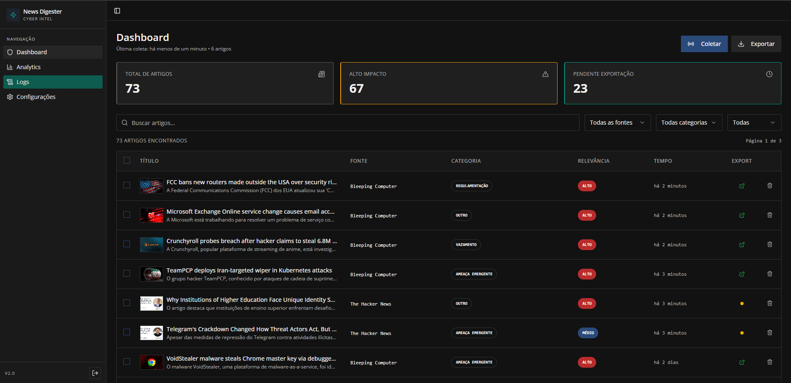

JOÃO VICTOR FABIJAKI
Analista de Segurança
- joaov.fabijaki@gmail.com
- linkedin.com/in/joaofabijaki99
- Joinville - SC
Olá! Sou formado Técnico em Informática e acadêmico de Engenharia de Software. Possuo vivência internacional (EUA, Inglês C1) e experiência focada em Segurança da Informação (AD, Firewalls, M365, Azure).
Tech Stack
Perfil Comportamental (DISC)
Perfil Analítico-Estável (C-S)
De acordo com a metodologia Innermetrix, possuo um perfil focado em Precisão e Consistência. Minha pontuação extremamente alta em Cautela (99%) indica uma forte orientação para qualidade, lógica e conformidade com padrões técnicos. Combinado com a Estabilidade (77%), atuo de forma paciente e metódica, ideal para resolução de problemas complexos e arquitetura de soluções seguras.
Projetos

News Digester Pro
Plataforma de inteligência em cibersegurança que coleta, analisa com IA e exporta notícias de fontes especializadas para um pipeline de publicação automatizado no LinkedIn.
bot_pentest
Ferramenta Python para testes de penetração em formulários web. Simula comportamento humano com evasão avançada de anti-bots, rotação de identidade via Tor e geração de dados brasileiros realistas.
Formação & Cursos
Extracurricular
Bombeiro Voluntário
Aprovado no 40º Curso de Formação de Bombeiro Voluntário Operacional de Joinville (2023). Experiência em disciplina rígida, hierarquia e trabalho sob pressão. Ver aprovados
Robótica Industrial
Cursei robótica por 2 anos no SESI (2017-2018). Primeiro contato com lógica de programação e automação de hardware.
Intercâmbio (EUA)
Vivência em Houston, Texas (2018-2019, 2022 (6 meses), 2025 (8 meses)). Fluência no inglês (C1) e adaptabilidade cultural.
Projetos Pessoais
Desenvolvimento de jogo em C# e controle personalizado com Arduino para uma Transteiner.
Experiência
Estagiário de TI
Suporte técnico, servidores e atendimento ao usuário.
Estágio em Segurança
Monitoramento Zabbix, Firewalls e backups.
Analista de Segurança N2
Administração de AD, Windows Server, M365 e implementação de infraestrutura de segurança.
Analista Cloud - NOC
Gestão e otimização de Azure (IaaS/PaaS), observabilidade unificada (Grafana/Datadog) e automação de incidentes.
Entre em contato!
Combinando expertise técnica em Cloud & Segurança com a comunicação necessária para times globais.